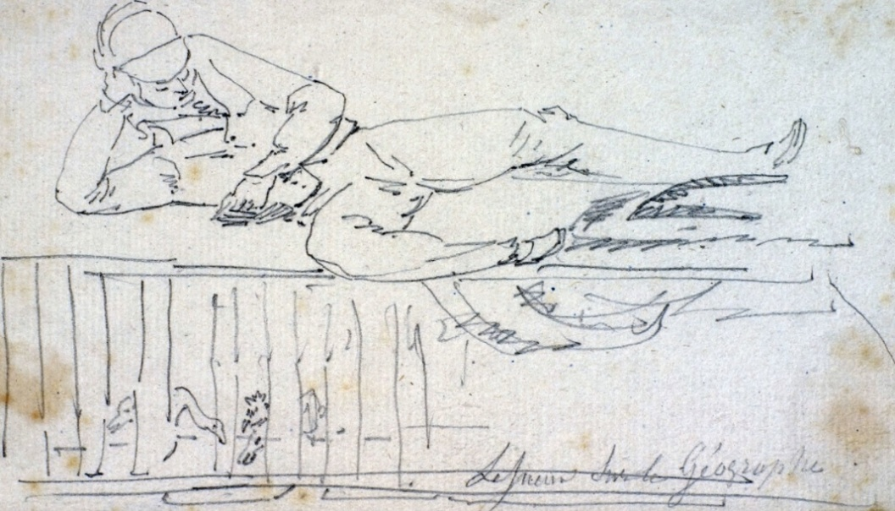
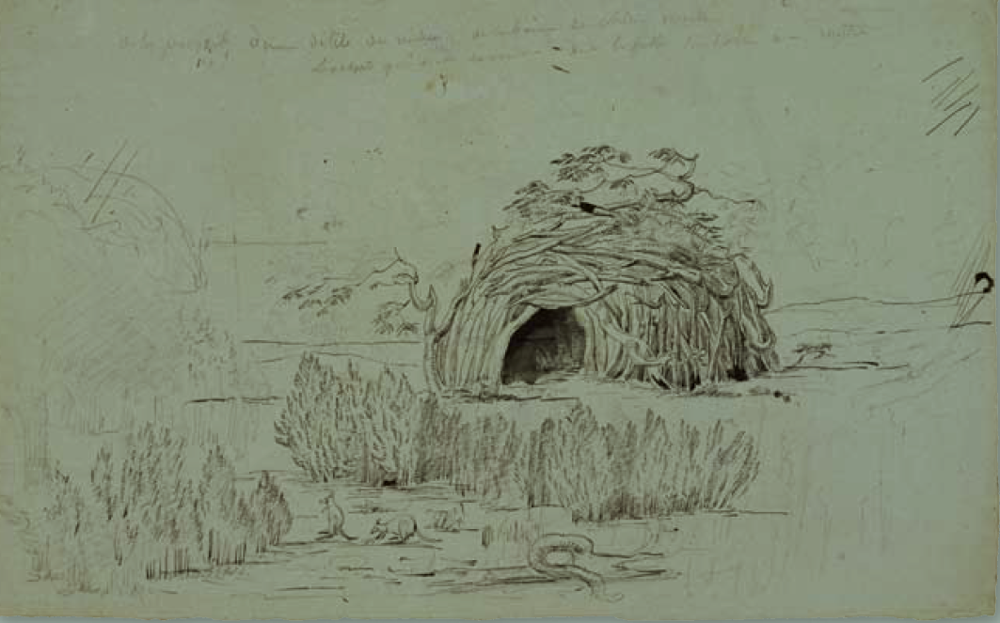
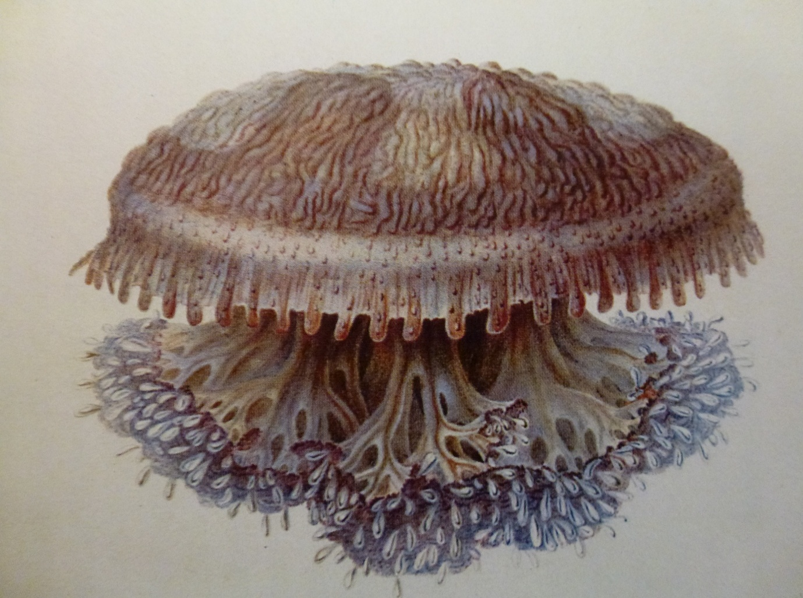

Source: Muséum d’Histoire Naturelle du Havre.
https://www.museum-lehavre.fr/collections/la-vie-bord

Drawings by C.-A. Lesueur and N. Petit; engravings by Cloquet, Fortier, B. Roger and others; text by François Péron and Louis de Freycinet. Source: Bibliothèque nationale de France.
http://catalogue.bnf.fr/ark:/12148/cb38495530j
https://gallica.bnf.fr/ark:/12148/btv1b2300134q/f16.item.zoom


By taking Charles-Alexandre Lesueur and Nicolas-Martin Petit on board the Géographe as auxiliary gunners, Baudin was nevertheless fully aware of their talents as draughtsmen. The commander’s decision proved all the more valuable when the expedition’ s official artists left the voyage during the stopover at Isle de France, before the mission had even begun its work of exploration in the southern lands.
Lesueur and Petit were then called upon to assume essential artistic functions. Their skills gradually came to be distributed according to the needs of the expedition: Petit devoted himself chiefly to portraits and human figures, while Lesueur turned more particularly to landscapes, dwellings, objects and, above all, the natural specimens collected by François Péron.
This complementarity of roles gave rise to a particularly close collaboration between Péron and Lesueur. It was scientific, artistic, and personal. Lesueur did not merely illustrate Pé ron’s observations; his drawings helped give them precision, clarity, and lasting form. Péron, who was himself little trained in the art of drawing, found in Lesueur an indispensable collaborator. Their intimacy is reflected in Péron’ s letters, in which he affectionately addressed him as “mon cher papa Lesueur”, despite the fact that Lesueur was three years younger than he was.
In the report presented to the French government on 9 June 1806 by a commission of the Institut, Georges Cuvier stressed the exceptional importance of the collections deposited at the Muséum by Péron and Lesueur. According to Cuvier, they included “more than one hundred thousand animal specimens”, among which several new genera had been identified, and more than 2,500 new species. He added that Péron and Lesueur had, “ by themselves, made known more animals than all the travelling naturalists of recent times”. Cuvier summarised their method in a famous phrase: “The two friends shared their work: one drew what the other described.”
This complementarity explains the documentary richness of Lesueur’ s work. His drawings do not merely reproduce an isolated subject; they place beings, objects, and structures within their environment. Cuvier had already noted this in relation to the inhabitants of the southern lands, observing that Lesueur’ s drawings could provide “the most exact information on their way of life and their dwellings”.
The plate showing the tombs on Maria Island offers a striking example. Lesueur took up and completed a drawing begun by Petit, based on a site discovered by Leschenault and Pé ron near Point Lesueur. The image does not show the tombs alone: it situates them within their landscape, on the summit of a hill overlooking the bay. The engraved bark of which the tombs were made, the arrangement of the monument, the traces of an earlier fire, and the topographical position of the site are all rendered with careful attention. The illustration thus extends Péron’s text, which had provided a long, detailed, and interpretative description of the tombs.
The same principle appears in Lesueur’s drawing of an Aboriginal shelter observed on Peron Peninsula, in Shark Bay. Pé ron described huts built on sandy ground, previously cleared of vegetation, formed from branches planted in the sand, bent, interlaced, and covered with foliage, dry grasses, and sand. Lesueur translates this description into an image, but he also adds the documentary precision of the naturalist artist: the shrubs placed in the foreground help identify the materials used to construct the shelter. He also represents two small marsupials, perhaps tammar wallabies, which situate the scene within its living environment.
Lesueur’s role was equally essential in Péron’s research on jellyfish and “zoophytes” . These gelatinous, translucent, and extremely fragile animals were difficult to preserve after capture. They had to be observed almost immediately, before their forms, colours, and transparency deteriorated. Through drawing, Lesueur recorded what the specimens themselves could not retain for long: the arrangement of their tentacles, their subtle colouring, the internal organisation visible through the living tissue, and the general appearance of animals that were almost impossible to preserve.
This collaboration produced a remarkable group of vellum drawings, closely associated with Péron’s descriptions. Péron’ s manuscript on jellyfish, illustrated by Lesueur, was not published until 1995, when Jacqueline Goy brought it out under the title Les méduses de François Pé ron et Charles Lesueur. Un nouveau regard sur l’expédition Baudin. The work of Goy, together with Danièle Vial’s study of Lesueur’ s jellyfish on vellum, has shown the scientific, taxonomic, and aesthetic value of these images. Lesueur gave lasting visual form to fugitive organisms whose very substance resisted preservation.
The Cassiopea dieuphile, collected in the waters of Terre de Witt, near the Lesueur Islands, is a particularly evocative example. In this image, Lesueur does not present the jellyfish as a mere curiosity. He records its distinctive features, structure, transparency, and delicate colouring with an accuracy that belongs both to scientific observation and to remarkable aesthetic sensitivity. The drawing becomes an instrument of knowledge: it connects the collected specimen, Péron’ s description, and the visual memory of the expedition.
The four toponyms dedicated to Lesueur — a mount, a point, islands, and a cape — therefore mark more than a personal tribute. They acknowledge the essential place he occupied in the scientific and visual production of the voyage.
Through his drawings, Lesueur helped transform field observation into lasting documents, capable of describing coastlines, the shelters built by their inhabitants for the living and the dead, and the most ephemeral forms of the living world.